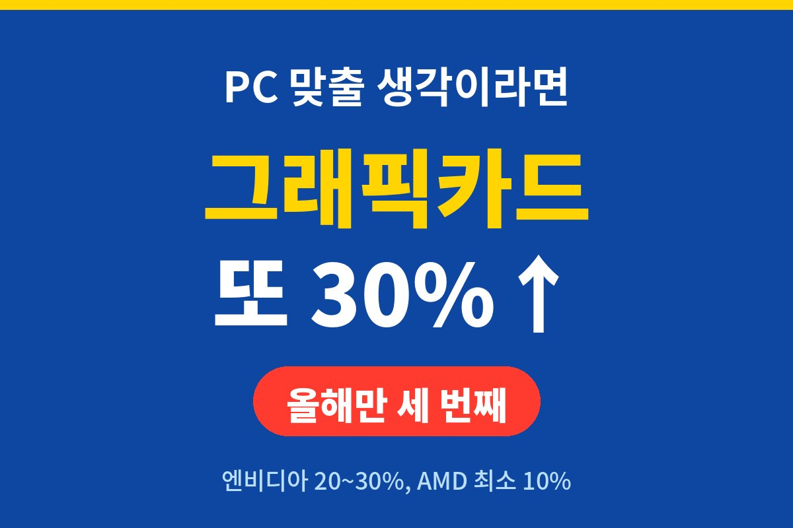
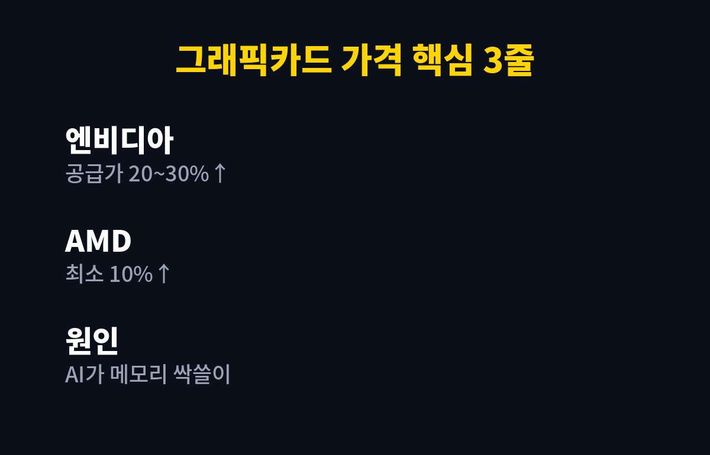
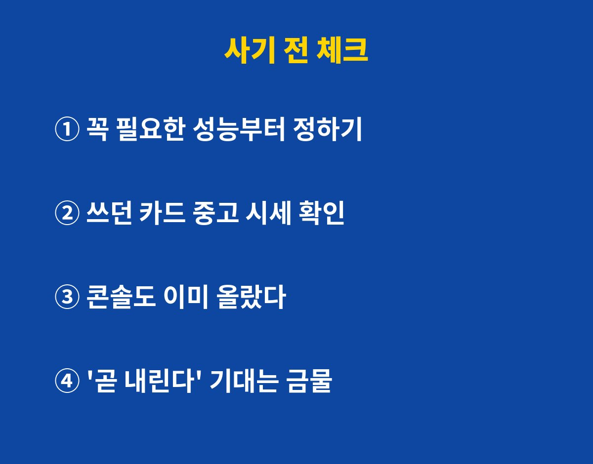

그래픽카드 가격이 또 오릅니다. 엔비디아가 제조사에 넘기는 GPU 공급가를 20~30% 올릴 것으로 알려졌는데, 올해 들어서만 벌써 세 번째예요.
게임용 PC 새로 맞추려고 "조금만 더 기다려 보자" 하던 분이라면 지금 계산을 다시 해야 해요. 기다릴수록 싸지는 게 아니라, 오히려 더 비싸지는 흐름이거든요.
업계에 알려진 내용을 정리하면 이래요. 엔비디아는 지포스 제품군 전반으로 공급가 인상이 번질 가능성이 나오고, AMD도 최소 10% 올리겠다는 뜻을 제조사에 전달한 것으로 전해졌어요.
| 회사 | 공급가 인상 폭 | 비고 |
|---|---|---|
| 엔비디아 | 20~30% | 올해 세 번째, 지포스 전반 확대 가능성 |
| AMD | 최소 10% | 제조사에 계획 전달 |
| 콘솔 | 이미 인상 | 닌텐도·소니 일부 지역, 엑스박스 추가 인상 |
여기서 하나 짚고 갈게요. 공급가는 엔비디아가 그래픽카드 만드는 회사에 칩을 파는 값이에요. 그래서 매장 가격이 똑같이 30% 뛰는 건 아니에요. 다만 제조사랑 유통사가 오른 원가를 일부라도 판매가에 얹을 가능성이 높아서, 우리가 체감하는 값은 오른다고 보는 게 맞아요.

원인은 메모리예요. AI 서버가 메모리를 엄청나게 빨아들이면서 메모리 값이 뛰었고, 그 여파가 그래픽카드에 들어가는 GDDR 메모리까지 번졌거든요.
쉽게 말해 게이머랑 AI 데이터센터가 같은 재료를 두고 경쟁하는 상황이에요. 그리고 돈 싸움에서 누가 이길지는… 뭐, 다들 아시죠.
업계에선 메모리 수급 불안이 금방 풀리기 어렵다고 봐요. 그래픽카드 가격도 당분간 높은 수준이 이어질 가능성이 크다는 거죠.
아쉽지만 거기도 이미 올랐어요. 올해 닌텐도와 소니가 일부 지역에서 콘솔 값을 올렸고, 마이크로소프트도 8월 1일부터 일부 지역에서 엑스박스 가격을 추가로 인상했어요.
PC든 콘솔이든 "게임 기계값 쇼크"는 피하기 어렵다는 얘기예요. 도망칠 곳이 별로 없다는 게 제일 슬픈 포인트죠.
정답은 사람마다 달라요. 그래도 손해 안 보는 순서는 있어요.
1. 필요한 성능부터 정하기. 내가 하는 게임, 해상도, 모니터 주사율을 먼저 적어 보세요. 최고급 카드가 아니어도 충분한 경우가 많아요.
2. 쓰던 카드 시세 확인. 새 카드 값이 오르면 중고 시세도 같이 버티는 편이에요. 팔 생각이 있다면 지금 내 카드 값부터 알아 두세요.
3. '곧 내린다' 기대는 접기. 올해만 세 번 올랐어요. 당장 필요하다면 무작정 기다리는 게 오히려 손해일 수 있어요.
4. 급하지 않다면 지켜보기. 지금 PC로 잘 돌아간다면 굳이 서두를 이유는 없어요. 인상분이 실제 판매가에 얼마나 반영되는지 보고 움직여도 늦지 않거든요.

여러분은 이번 연말에 PC 맞추실 건가요, 아니면 지금 카드로 버티실 건가요? 댓글로 알려 주세요.
게임·PC 부품 값 움직임 놓치기 싫다면 구독 눌러 두세요. 지갑 지키는 소식만 빠르게 가져올게요.
기사·공식 발표 기준이며 출시·가격 정보는 바뀔 수 있어요.